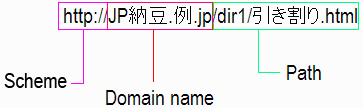

O adresa Web este folosita pentru a indica o resursa in Web cum ar fi o pagina Web. Dezvoltari recente va permit sa adaugati caractere non-ASCII adreselor Web. Acest articol ofera o introducere amanuntita despre cum functioneaza. A fost scris pentru autorii de continut si utilizatorii obisnuiti care care vor sa inteleaga baza fara prea multe detalii tehnice complicate. Pentru a fi mai simplu, vom folosii exemple bazate pe HTML si HTTP. Vom demonstra cum functioneaza atat pentru numele domeniului cat si informatia de cale intr-o retea.
In acest moment adresele Web sunt exprimate in mod normal folosind Resurse Uniforme de Identificare sau URI. Sintaxa URI definita in RFC 3986 STD 66 (Resurse Uniforme de Identificare (URI): Sintaxa Generica) restrictioneaza adresele Web la un numar mic de caractere: in principiu, doar caractere mari si mici din alfabetul limbii engleze, numere europene si un numar mic de simboluri.
Motivul original pentru aceasta a fost ajutorarea transcrierii si folosirii atat in sisteme computerizate cat si a comunicatiilor ce nu tin de calculatoare, evitarea suprapunerii cu caractere folosite in mod conventional ca delimitatoare in jurul URI-urilor, si pentru a facilita introducerea folosind acele facilitati de intrare disponibile majoritatii utilizatorilor Internetului.
Asteptarile utilizatorului si folosirea Internetului au avansat de atunci, si exista acum o nevoie in crestere de activare a caracterelor din orice limbaj in adresele Web. O adresa Web in limbajul si alfabetul propriu este usor de creat, memorat, transcris, interpretat, ghicit si asociat. Este de asemenea important pentru recunoasterea emblemei. Acesta este un lucru mai bun pentru afaceri, pentru gasirea unor lucruri si pentru comunicare. Pe scurt, mai bun pentru Web.
Imaginati-va de exemplu, ca toate adresele web ar trebui scrise in japoneza katakana, asa cum este ilustrat in exemplul de mai jos. Cat de usor ar fi pentru dumneavoastra, daca nu a-ti fi japonez,sa faceti lucruri cum ar fi recunoasterea proprietarului sitului, scrierea adresei in browser, scrierea URI-ului pe hartie, etc?
Au aparut mai multe dezvoltari recente care incep sa faca acest lucru posibil.
Ne vom referi la adresele Web care permit utilizarea de caractere dintr-o gama larga de scripturi ca Identificatoare de Resurse Internationalizate sau IRI. Pentru ca IRI sa functioneze, exista patru cerinte de baza:
Diverse formate de fisiere si specificatii suporta deja IRI. Exemplele includ HTML 4.0, XML 1.0 identificatoare de sistem, atributul href XLink, tipul de date XMLSchema anyURI, etc. Vom vedea de asemenea mai tarziu ca majoritatea browserelor suporta deja utilizarea IRI.
Din nefericire, nu prea multe protocoale permit IRI sa treaca neschimbat. De obicei necesita ca adresa sa fie specificata folosind caractere ASCII definite pentru URI. Exista totusi, cai bine specificate in jurul acesteia, si le vom descrie pe scurt in acest articol.
A patra cerinta necesita ca un sir de caractere sa fie comparat cu un altul chiar daca aceste caractere sunt reprezentate de acelasi tip de codare sau nu, ie. bytes. Acest lucru este facut folosind UTF-8 ca separator.
Vom folosi urmatoarea adresa Web fictiva in majoritatea exemplelor de pe aceasta pagina:

Acesta este un IRI simplu compus din trei parti.
http:// contine informatii despre schema care va fi folosita. Observatii cum caractere non-ASCII
nu sunt folosite aici.JP納豆.例.jp, reprezinta numele domeniului.Ce inseamna totul. Numele domeniului(JP納豆.例.jp) incepe cu 'JP' astfel incat in exemple va putem arata ce se intampla unui text ASCII intr-un nume de domeniu. Restul numelui domeniului este citit 'natto (o delicatesa Japoneza obtinuta din boabe fermentate de soia) dot rei (insemnand exemplu) dot jp (codul de tara al Japoniei)'. Calea se citeste 'dir1 slash hikiwari (un fel de natto) punct html'.
Cand vine vremea sa ne ocupam de cerintele de la doi la patru de mai sus, exista o solutie pentru numele domeniului si o solutie diferita pentru cale. Le vom explora pe fiecare pe rand.
Numele de domenii sunt alocate si manevrate de organizatii de inregistrare a domeniilor imprastiate in intreaga lume.
O abordare standard a manevrarii numelor de domenii multilingve a fost stabilita de IETF in Martie 2003. Este definita in RFC 3490, 3491, 3492 si 3454, si este bazata pe Unicode 3.2. Se face referinta la ea folosind termenul Nume de Domeniu Internationalizat sau IDN.
Dam un exemplu ceva mai detaliat in urmatoarea sectiune dar, pe scurt, adresa Web dorita este stocata intr-un link dintr-un document sau scrisa in bara de adrese a clientului folosind caracterele native relevante, dar cand un utilizator da click pe link sau initializeaza cererea, agentul utilizatorului(ie. browserul sau orice alt client care cere resursa) trebuie sa converteasca orice caractere native de script din adresa Web in reprezentari punycode.
(Binenteles, daca agentul utilizatorului nu este capabil sa faca asta, este oricand posibil sa exprimam locatia direct in punycode, chiar daca nu este foarte usor de folosit.)
Sa examinam pasii facuti in rezolvarea unui Nume de Domeniu International de la utilizator la identificarea resursei. (Sa ne amintim ca vedem doar cum este manevrat domeniul. Informatia de cale este tratata diferit si va fi descrisa mai tarziu.)
Utilizatorul da click pe un hyperlink sau introduce IRI in bara de adrese a unui agent de utilizator. In acest punct IRI contine caractere non-ASCII care pot exista in orice codare de caractere. Acesta este numele de domeniu care apare in exemplul de mai sus.
JP納豆.例.jp
Daca sirul care reprezinta numele domeniului nu este in Unicode, agentul utilizatorului converteste sirul in Unicode. Apoi executa niste functii de normalizare asupra sirului pentru a elimina alte posibile ambiguitati care ar putea exista in textul codat Unicode.
Normalizarea presupune lucruri ca si convertirea caracterelor mari in caractere mici, reducerea reprezentarilor alternative(eg. convertirea jumatatii de latime kana la intreg), eliminarea caracterelor interzise (ex. spatii), etc.
Apoi, agentul utilizatorului converteste fiecare eticheta (ie. bucati de text dintre puncte) din sirul Unicode in reperzentatie punycode.
Un marker special ('xn--') este adaugat la inceputul fiecarei etichete care contine caractere non-ASCII pentru a arata ca eticheta nu a fost originala ASCII. Rezultatul final nu este foarte prietenos pentru utilizator, dar reprezinta cu acuratete sirul original de caractere folosind doar caracterele care au fost acceptate anterior pentru numele de domenii . Exemplul nostru arata acum asa:
xn--jp-cd2fp15c.xn--fsq.jp
Observati cum caracterele ASCII cu litera mare de la inceputul numelui de domeniu sunt acum cu litera mica, dar inca de recunoscut. Orice caractere existente ASCII dintr-o eticheta apar primele, urmate de un apostrof si apoi de o reprezentare bazata pe ASCII a tuturor caracterelor non-ASCII.
Apoi, punycode este transformat de serverul numelui de domeniu intr-o adresa numerica de IP(la fel cum orice alt nume de domeniu este transformat).
In sfarsit, agentul utilizatorului trimite cererea pentru pagina. Din moment ce punycode nu contine caractere altele decat cele permise de protocoale ca HTTP, nu este nici o problema cu transmiterea adresei. Ar trebui sa se potriveasca cu un nume de domeniu inregistrat.
Observati ca majoritatea codurilor de tara de nivel mare, de exemplu, .jp de la sfarsitul JP納豆.例.jp, trebuie sa fie in continuare in caractere latine. Din 2010, totusi, IANA a inceput sa introduca progresiv coduri de tara internationalizate pentru domenii de top, cum ar fi مصر. pentru Egipt, si .рф pentru Rusia.
In practica, are sens sa inregistram doua nume pentru domeniu. Unul in scriptul nativ, si unul folosind caractere ASCII. Ultimul va fi memorabil si mai usor de scris pentru oamenii care nu citesc si nu scriu in limba nativa. De exemplu, putem inregistra o transcriere a limbii Japoneze in script Latin, ca:
http://JPnatto.rei.jp/Oriunde autoritatile inregistrarii domeniilor pot fi de acord sa accepte numele domeniilor intr-o forma si codare particulara(punycode bazat pe ASCII), numele caii multi-script identifica resurse aflate pe mai mulet tipuri de platforme, a caror distem de fisiere folosesc si vor continua sa foloseasca multe tipuri de codare. Acest lucru faca calea mult mai dificil de manevrat decat numele domeniului.
Avand de a face cu numele domeniului folosind punycode, trebuie acum sa ne descurcam cu calea parte a unui IRI. Standardul Propus IETF RFC 3987 (Identificatori de Resurse Internationalizate (IRI)) defineste cum manevram acest lucru.
Exista deja un mecanism in specificatia URI pentru reprezentarea caracterelor non-ASCII din URI-uri. Trebuie sa reprezentam bitii anteriori folosind ceea ce numim 'scaparea-procentuala' (in specificatie, termenul mai putin folosit de 'codare-procentuala' este folosit). Deci, in pagina in care citim acum, care este codata in UTF-8, am putea reprezenta numele fisierului 引き割り.html din exemplul anterior asa cum este ilustrat dupa acest paragraf. Ceea ce vedem sunt numere hexadecimale formate din 2 numere precedate de %. Acestea reprezinta bitii folositi pentru a coda in UTF-8 caracterele Japoneze din sir. Fiecare caracter Japonez este reprezentat de 3 biti, care sunt transformati in trei scapari-procentuale.
%E5%BC%95%E3%81%8D%E5%89%B2%E3%82%8A.html
In afara faptului ca nu este foarte prietenos pentru utilizatori, exista o si mai mare problema aici. O alta persoana ar putea vrea sa urmareasca acelasi link dintr-o pagina care foloseste o codare Shift-JIS, in loc de UTF-8. In acest caz, daca ar fi sa folosim scaparea-procentuala pentru a transforma (aceleasi) caractere din adresa pentru a se conforma cu cerintele URI-ului, ne-am baza scaparile pe bitii care reprezinta 引き割り.html in Shift-JIS. Sunt doar doi biti pentru fiecare caracter Japonez Shift-JIS, si sunt diferiti de cei folositi in UTF-8. Deci acest lucru ar produce secventa total diferita de biti de mai jos.
%88%F8%82%AB%8A%84%82%E8.html
Deci, aici vedem ca, desi mecanismul de scapare a URI-ului permite ca adresa Japoneza sa fie specificata, rezultatul propriu zis va diferii in functie de pagina de origine. Cum este deci posibil sa stim cum sa mapam intr-o secventa de caractere care se va potrivii cu numele resursei asa cum este expusa de sistemul unde rezida?
Marea dificultate aici este faptul ca nu exista nicio data meta asociata codarii cu sirurile URI care indica ce caractere reprezinta. Chiar daca aceasta informatie ar fi disponibila, numarul total de mapari pe care uns erver ar trebui sa il suporte pentru a converti orice string primit in codarea corecta ar fi foarte mare.
Nu numai asta, dar sistemul de fisiere de care apartine de fapt resursa poate expune numele fisierului folosind o cu totul alta codare, cum ar fi EUC-JP. Daca e asa, secventa de bit anterioara care reprezinta numele fisierului asa cum sistemul o cunoaste ar fi din nou diferita. Deci cum vom sti ca aceste secvente de biti se refera toate la aceasi resursa?
Observati ca numele fisierului poate fi stocat si expus in diferite codari. In Windows NT sau Windows XP , IIS sau Apache 2 expun numele fisierului ca UTF-8, chiar daca sistemul de operare il stocheaza ca UTF-16.
Specificatiile IRI utilizeaza Unicode ca agent. Specifica ca inaintea transformarii pentru a scapa, IRI ar trebui convertit in UTF-8. Pentru IDN, daca o conversie este ceruta de protocol, utilizatorul agent este responsabil de schimbare cand o cerere este facuta pentru resursa.
Serversul trebuie de asemenea sa recunoasca caracterele Unicode in adresa web de intrare si sa le mapam in codificarea folosita pentru resursele reale.
(Tineti minte ca deja ne-am confruntat cu partea numelui domeniului IRI folosind IDN. Regulile din specificatiile IRI sunt in mod normal aplicate partea caii adreselor Web multilingvistice.)
Este de asemenea posibil sa aplici procentul-evadare pe numele domeniului inaintea convertirii, dar clientii deseori convertesc direct in punycode.
Lasa-ne sa ne uitam la ce face clientul pentru a trimite partea caii unei adrese web unui server HTTP. Aici este partea caii exemplului anterior al adresei Web.
/dir1/引き割り.htmlCand utilizatorul da click pe un hyperlink sau intra in IRI din bara de adrese a unui utilizator agent, adresa poate fi in orice codificare a caracterelor, dar acea codificare este de obicei cunoscuta.
Daca sirul este introdus de utilizator sau sticat intr-un codificator non-Unicode, este convertit la Unicode, normalizat folosind Forma C a Normalizarii Unicode si codificat de codificatorul UTF-8.
Agentul utilizator care converteste bitii non-ASCII pentru procente-scapari. Exemplul nostru arata astfel:
/dir1/%E5%BC%95%E3%81%8D%E5%89%B2%E3%82%8A.htmlSirul este acum in forma URI si va fi acceptat de protocoale ca HTTP. Memorati cum caracterele ASCII 'dir1' sunt trecute fara modificari, din moment ce aceste caractere sunt codificare in acelasi mod in ASCII si in UTF-8.
Agentul utilizator trimite cerinta pentru pagina.
Cand aceasta cerinta ajunge la server, una din doua lucruri trebuie sa se intample:
Martin Dürst a scris un modul Apache numit mod_fileiri pentru a converti cerintele din UTF-8 in codificarea serverului.
Asta acopera baza. Sunt unele parti aditionale ale specificarii care confrunta puncte mai fine, ca manevrarea textului bidirectional in IRI si asa mai departe.
Aceasta este prima parte a antetului HTTP pentru pagina ceruta generata de exemplul nostru. Arata ca numele gazda ca in IDN si calea utilizand procentul-scapare au fost potrivite.
GET /dir1/%E5%BC%95%E3%81%8D%E5%89%B2%E3%82%8A.html HTTP/1.1 Host: xn--jp-cd2fp15c.xn--fsq.jp User-Agent: Mozilla/5.0 (Windows; U; Windows NT 5.1; en-US; rv:1.5a) Gecko/20030728 Mozilla Firebird/0.6.1 …
Numeroase autoritati ale numelui domeniului deja ofera inregistrarea numelui de domeniu internationalizata. Acestea includ furnizori pentru levele de top din tara domenii ca: as .cn, .jp, .kr, etc., si levele globale de top cu domenii ca: .info, .org si .museum.
Sprijinul din partea clientului pentru IDN apare in versiunile recente ale marilor browsere ce includ Internet Explorer 7, Firefox, Mozilla, Netscape, Opera, si Safari. Functioneaza doar in Internet Explorer 6 daca downloadezi un plug-in (paginile de suport Microsofts ofera niste sugestii). Aceasta inseamna ca poti sa utilizezi IDN in valori href sau bara de adrese si browserul va converti IDN-ul in punycode si va cauta gazda.
Poti sa faci un test de baza sa vezi daca IDN-ul functioneaza in sistemul tau utilizand acest test simplu.
A fost o problema pana acum faptul ca IDN nu a fost sustinut Internet Explorer,cu uriasa sa cota de piata. Desi plug-in-urile sunt disponibile, nu toti oamenii vor stii cum sa o faca, vor dori, sau vor fi capabili sa le instaleze. Totusi, IE7 sau sucesoarele ei, care sprijina IDN-ul vor inlocui, cu timpul, cele mai multe din instalarile IE6.
Tine cont de faptul ca, ca o solutie de rezerva simpla pana cand IDN este sustinut pe scara larga, autorii de continut care vor sa puncteze o resursa folosind IDN pot scrie textul link-ului in caractere native si pot sa puna o reprezentare punycode in atributul href. Aceste garantii ca utilizatorul va putea sa se lege de resursa, indiferent de platforma folosita.
Daca, din diferite motive, ti-ai dori, este posibil sa opresti suportul IDN in IE7, Firefox si Mozilla.
Una din problemele asociate cu suportul IDN in browsere este ca poate facilita phishingul prin asa-numitele 'atacuri homografe'. In concesinta, majoritatea browserelor care suporta IDN de asemenea pun in aplicare niste garanntii care protejeaza utilizatorii de asemenea frauda.
Multumiri speciale lui Michael Monaghan si Greg Aaron pentru cintributiile lor in aceasta sectiune.
Modul in care browserele alerteaza in mod normal utilizatorul de posibilitatea unui atac homograf este de a arata URI-ul in bara de adrese si statusul barei de adrese utilizand punycode, mai degraba decat in caracterele originale Unicode. Utilizatorii ar trebui asadar sa verifice intotdeauna bara de adrese dupa ce pagina este incarcata sau bara de status inainte de a accesa un link. Totusi, luati in considerare ca:
'Atacurile homografe' se refera la mixul caracterelor care arata la fel vizual in URI pentru a insela pe cineva in legatura cu site-ul pe care il acceseaza. De exemplu, in unele fonturi, litera 'I' seamana destul de mult cu 'l' astfel ca URI-ul 'www.paypaI.com' pare sa te duca pe un site Paypal , dar de fapt, cel mai probabil te ghideaza intr-un loc unde cineva va incerca sa culeaga informatiile tale personale.
Browsere diferite utilizeaza strategii diferite pentru a afla daca URI-ul ar trebui aratat in IUnicode sau punycode.
Daca o adresa apare ca punycode, nu inseamna neaparat ca este un site fals 'ai grija utilizatorule'. Este dupa preferinta utilizatorului sa incerce sa-si dea seama daca site-ul ar trebui evitat sau nu .
Detectarea potentialelor atacuri homografe este de obicei o parte din mecanismul total folosit de browser pentru a detecta daca un site este phishing sau nu.
Internet Explorer 7 arata adresa ca punycode daca una din conditiile este adevarata:
Numele domeniului contine un caracter de la un script care nu este folosit pentru limbile incluse in preferintele lingvistice ale utilizatorului.Limbile care folosesc scriptul Latin sunt impartite in Engleza (ASCII doar) si altele (pentru care orice caracter Latin non-ASCII este valid). De exemplu, bäcker.com nu va functiona daca preferintele voastre lingvistice includ doar Engleza, dar vor functiona daca aveti Germana in preferintele voastre ( sau, sa spune, Franceza, din ,moment ce caracterele cu accent nu sunt specifice limbii).
Orice etichete in numele domeniului (ie. o insiruire de caractere intre puncte) contine caractere dintr-un amestec de scripturi care nu apar impreuna intr-o singura limba. De exemplu, numele de domeniu ελληνικάрyccĸий.org va fi afisat capunycode deoarece caracterele Grecesti nu pot amesteca Chirilicul intr-o singura eticheta. Pe de alta parte, ελληνικά.рyccĸий.org ar fi bine. De asemenea, o combinatie de Japoneza kanji si kana este acceptabila, ex. 全国温泉ガイド.jp.
IE7 permite unui IDN sa fie afisat caUnicode daca combina caracterele ASCII cu o un singur alt script dintr-o lista data. Chirilicul nu este unul nin acele scripturi, asadar pаypаl.com (unde caracterele 'a' sunt din blocul Chirilic decat din cel Latint) ar fi afisat ca punycode.
Legand comportamentul la lista limbilor din preferintele browserelor inseamna, de asemenea ca o limba care nu este in lista standard furnizata de IEE va produce intotdeauna punycode. De examplu, Amharic in textul Ethiopian va fi afisat ca punycode chiar daca adaugi ajutor la preferintele browserului. (Din fericire, nu par sa fie registre care sa furnizeze IDN-urile Amharicin acest moment.)
Unele domenii de dume frauduloase ar putea sa se strecoare pe acest net. In acest caz, protectia normala a phishingul IE7 ar pasi inauntru pentru a compara domeniile cu site-turi raportate. IE7 poate, de asemenea, sa 'aplice euristica suplimentara pentru a determina daca numele unui domeniu este ambiguu vizual'. Aceasta este de ajutor cand scrisori din acelasi scirpt sunt similare vizual.
Pentru afisarea IDN-urilor suspecte in bara de adrese in punycode, IE7 utilizeaza de asemenea Bara de Informatii pentru a avertiza posibilul pericol utilizatorului. Mai utilizeaza si o pictograma ce poate fi apasata, situata la capatul barei de adrese pentru a te anunta cand un URL contine o non-ASCI, caracter I. De asemenea, afiseaza bara de adrese in toate ferestrele.
Firefox 2.x utilizeaza o abordare diferita. Afiseaza numai numele de domenii in Unicode pentru anumite domenii de nivel de top din lista alba. Firefox selecteaza Domenii de Nivel de Top (TLD) care au stabilit politici pentru numele de domenii, au permis inregistrarea si apoi se sprijina pe procesele de inregistrare pentru crearea de IDN-uri sigure. Poti gasi o lista a suporturilor TLD pe site-ul Mozilla. Daca un IDN este dintr-un TLD care nu este pe lista, adresa web va aparea in forma punycode in bara de status si de adrese. In unele cazuri, declaratiile politicii TLD ar trebui sa includa reguli despre managementul caracterelor vizuale similare din setul de caractere permise.
In plus, IDN-urile ce contin caractere (ex. fractie-linie), chiar cu TLD-uri de incredere sunt tratate cu suspiciune si face ca eticheta sa fie afissata ca punycode.
Opera 9.x utilizeaza o abordare similara cu Firefox, desi este putin diferita in implementare. Oficial, afiseaza doar numele de domenii in Unicode pentru TLD-uri din lista alba, listate in opera6.ini, care este actualizata automat.
Pentru TLD-ru ce nu se afla pe lista, Opera spune ca permite numelor de domenii sa utilizeze caractere 1 Latine, ex. caractere Latine cu accente care sprijina limbile Vest Europene. Toate celelalte nume de domenii sunt afisate ca punycode.
In realitate, testele arata ca Opera afiseaza acum caracterele ca Unicode, indiferent daca un TLD este pe lista alba sau nu. O exceptie gasita este scriptul Devanagari, care este afisat ca punycode daca TLD-ul nu este pe lista.
Opera ,totusi, afiseaza anumite combinari de scripturi ca punycode. Testarile au aratat ca este real pentru combinatii de caractere din Greaca si Chirilica cu caractere Latine.
De asemenea, lista Operei de caractere ilegale este putin mai lunga decat lista oficiala IDN. Unele IDN-uri, in timp ce sunt afisate ca punycode in alte browsere, sunt complet ilegale in Opera.
Safari 9.x furnizeaza o lista editabila a utilizatorilor cu scripturi care sunt permise in numele de domenii native. Daca un caracter apare intr-un nume de domeniu si nu apartine unui script din lista, URI-ul este afisat ca punycode.
La momentul scrierii, lista initiala contine Arabic, Armenian, Bopomofo, Canadian_Aboriginal, Devanagari, Deseret, Gujarati, Gurmukhi, Hangul, Han, Hebrew, Hiragana, Katakana_Or_Hiragana, Katakana, Latin, Tamil, Thai, si Yi. Scripturi ca Cyrillic, Cherokee si Greek sunt excluse in mod special deoarece contin caractere care sunt usor confundate cu caracterele Latine.
Daca lista este golita, orice caracter non-ASCII face ca adresa sa fie afisata ca punycode.
Mozilla 1.7x afiseaza toate IDN-urile ca punycode.
Example. Este o pagina de test pe care o poti folosi pentru a vedea cum afiseaza browserul tau IDN-urile in bara de status. Vezi de asemenea pagina care aduna rezultatele pentru un numar de browsere.
Alte ingrijorari phishing si solutii de nivel de inregistrare. Unele aspecte potentiale ale controlului necesita adresarea de catre autoritatile de inregistrare si construite ppe politicile lor de inregistrari IDN.
Unele autoritati de inregistrare trebuie sa se gandeasca cu grija cum sa gaseasca moduri echivalente de a scrie acelasi cuvant. De examplu , cuvantul 'hindi' poate fi scris in Devanagari fie ca r हिंदी (folosind o anusvara) ori ca हिन्दी (folosind o glyph speciala pentru NA).
Este o problema similara in utilizarea caracterelor simplificate vs. traditionale in scriptul Chinese Han.
Alta probleme reiese atunci cand doua caractere sau combinatii de caractere dintr-un singur script cu aparenta similara, de exemplu litera Tamil KA க si cifra Tamil unu ௧ sunt indistinctibile. In alte cazuri, diacriticele atasate la caractere pot fi dificil de deosebit in fonturi de marime mica.
Asa cum a fost mentionat mai devreme, aceste probleme exista chiar si in setul de caractere in Latina (ASCII) . De examplu, litera O poate fi ocazional confundata cu cifra zero (0), si litera mica L (l) poate fi confundata cu cifra unu (1), in special in functie de fontul si dimensiunea afisarii folosite.
Pe de alta parte, un singur registru poate de asemenea sa aiba de-a face cu caractere similare si potential confundabile in diferite scripturi. De examplu, Tamil si Malayalam sunt doua scripturi Indice diferite care pot fi manipulate de acelasi registru, iar litera Tamil KA க (U+0B95) este foarte asemanatoare cu litera Malayalam KA ക (U+0D15). Un alt exemplu este implicatia inregistrarii etichetei ера (care utilizeaza doar caractere Chirilice) vs. epa (care utilizeaza doar caractere Latine) pentru un TLD ca .museum care nu are dea face cu scripturi multiple. Poate creea confuzii semnificative daca mai mult de un aplicant a fost capabil sa le inregistreze separat.
In unele cazuri, aceste scenarii pot fi facute reguli care pot fi culese si aplicate de agentii utilizatori pentru detectarea phishing-ului, dar deseori sunt mai bine rezolvate in momentul inregistrarii.
O abordare a nivelului de registru este aceea de a decide care caractere (ex. punctele Unicode) intr-o limba data vor fi permise in timpul inregistrarii. Aceste liste sunt numite tabele lingvistice si sunt dezvoltate de registre in cooperatie cu autoritati lingvistice calificate. De examplu, autoritatea lingvistica Indiana poate permite utilizarea literei KA க (U+0B95), dar nu cifra Tamil unu ௧ (U+0BE7) in nume de domenii, astfel evitand un conflict.
O alta abordare a nivelului de registru este aceea de a create tabele variate si capabilitati de inregistrare variate. Aceste tabele avriate arata care caractere sunt considerate confundabile vizual pentru limba sau scriptul ales. Daca numele domeniului contine un astfel de caracter, atunci versiunea numelui domeniului continand caracterul alternativ va fi automat rezervat pentru inregistrare. De examplu, daca numele domeniului cerut ( “domeniul primar”) contine litera Tamil KA க (U+0BE7), sistemul registrului poate genera o varianta a numelui domeniului, subtituind litera Malayalam KA ക (U+0D15) in locul literei Tamil KA. Toate variantele identificate pot fi automat interzise (de la a fi inregistrate sau create) ca parte a unui pachet asociat numelui primar inregistrat.
Consortiul Unicode dezvolta de asemenea un raport tehnic Consideratii de securitate Unicode care descrie probleme legate de spoofing-ul IDN si face recomandari pentru adresarea lor.
Procesul de conversie pentru parti ale IRI privind calea este deja nativ sustinuta in ultimele versiuni ale IE7, Firefox, Opera, Safari si Google Chrome.
Functioneaza in Internet Explorer 6 daca optiunea Tools>Internet Options>Advanced>Always send URLs as UTF-8 este activata. Aceasta inseamna ca linkuri in HTML sau bare de adrese tastate in bara de adrese a browserului vor fi corect transformate in acei agenti utilizatori. Nu functioneaza in afara cutiei pentru Firefox 2 (desi poti obtine rezultate daca IRI si numele resursei sunt in aceeasi cifrare), dar alarma tehnica poate activa o optiune sa sustina asta (set network.standard-url.encode-utf8 to true in about:config).
Daca resursa este sau nu gasita pe server, totusi, este o intrebare diferita. Daca fisierul sistem este in UTF-8, ar trebui sa nu existe probleme. Daca nu, si nu este nici un mecanism disponibil sa transforme adrese din UTF-8 intr-o cifrare potrivita, cerinta va esua.
Fisierele sunt in mod normal expuse ca UTF-8 de servere ca IIS si Apache 2 ope Windows si Mac OS X. Utilizatorii Unix si Linux pot stoca numele fisierului in UTF-8, sau pot folosi mod_fileiri module mentionat mai devreme. Versiunea 1 a serverului Apache nu expune inca nume de fisiere ca UTF-8.
Poti face o testare rapida sa vezi daca functioneaza pentru clientul si resursa ta utilizand un simplu test.
Noteaza ca, in timp ce baza poate functiona, sunt alte aspecte ale suportului IRI mai complicate, ca manuirea textelor bidirectionale in Arabic sau Hebrew, care ar putea necesita timp aditional pentru implementare deplina.
Sunt cateva imbunatatiri necesare specificatiilor pentru IDN si IRI, si acestea sunt puse in discutie. De examplu, este o nevoie de extindere a razei caracterelor Unicode care pot fi folosite in numele domeniilor pentru a acoperi ultimele versiuni Unicode si pentru a permite combinarea caracterelor de la capatul etichetelor de la dreapta la stanga scripturilor.
IDN and URI [PDF], Michel Suignard
RFC 3987 Internationalized Resource Identifiers (IRIs), IETF Proposed Standard, Martin Dürst, Michel Suignard
RFC 3986 STD 66 Uniform Resource Identifier (URI): Generic Syntax, IETF Standard, T. Berners-Lee, R. Fielding, L. Masinter
Unicode Technical Report #36 Unicode Security Considerations
RFC 4690: Review and Recommendations for Internationalized Domain NamesProbleme referitoare la caracterele specifice limbii unde este folosit acelasi script pentru diferite limbi, probleme legate de cazuri in acre limbile pot fi exprimate folosind mai mult de un scirpt, cazuri bi-directionale si problema caracterelor confundabile vizual.
ICANN Guidelines for the Implementation of Internationalized Domain Names Version 2.1 Ghidurile se aplica direct la registrele TLD si sunt destinate sa fie potrivite implementarii in alte registre si nivele inferioare.
Related links, Authoring HTML & CSS
Inregistrarea domeniilor
Registerul numelor de domenii fixeaza lista de caractere pe care oamenii pot sa cere sa fie folosita in tara lor sau in domenii de top. Totusi, cand o persoana cere un nume de domeniu care foloseste aceste caractere le este de dapt alocat un echivalent al numelui domeniului folosind o reprezentare denumita punycode.
Punycode este o cale de a reprezenta puncte de cod Unicode folosind doar caractere ASCII.